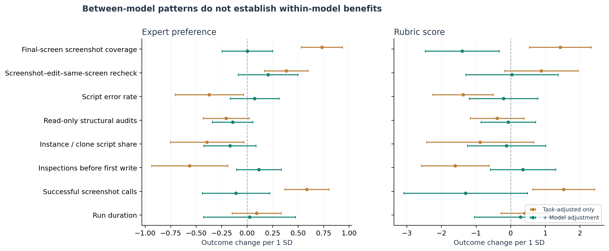
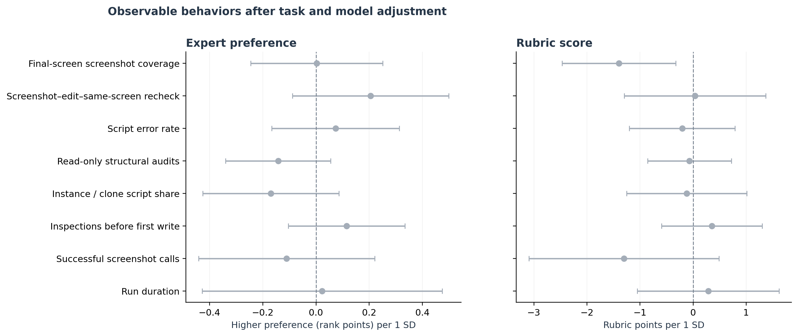
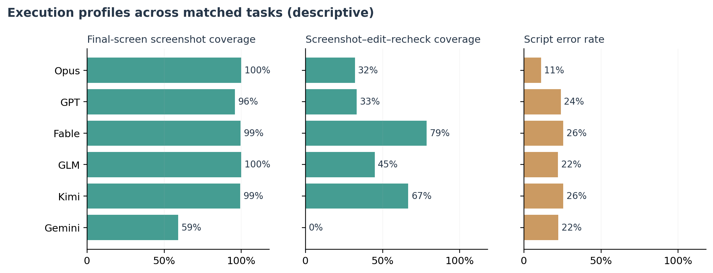

2026年11月8日本地快照分析。问题是行为与结果的关联，而非模型的心理动机或行为的因果作用。按版本匹配的专家偏好和Rubric分数分别分析，图表不展示评审身份或人数。
| 集合 | 范围 | 用途 |
|---|---|---|
| 工具行为提取 | 168个run，28题×6模型 | 140个run使用完整stream-json运行日志；28个GPT使用标准化轨迹 |
| 严格版本匹配主分析 | 144个run，24题×6模型 | 继承同run、原始评分记录、分数和交付图SHA256的联合核验；仅将这些run与人评连接 |
| 排除 | Chat Bot AI整题、Qwen | 旧GPT持续排除，且避免旧候选影响整题相对排序；Qwen不在Arena且只有3题 |
| 非严格题目 | 其余4题只留行为描述 | 未将当前run轨迹接到不同版本的人评；不混入主要回归 |
多数GLM轨迹的metadata标为subagent/compaction_merged，故不能先假定轨迹完整。本轮逐条解析完整日志后，140个有日志的run，其工具调用ID集合与当前导出轨迹对齐，调用数量相等，所选事件均有结果记录；这消除了当前快照的工具计数差异疑虑，但不保证所有内部上下文和推理都完整。报告只测工具事件及代码，不推断私有思维质量。
benchmark-artifact.json中的brief存在截断，若从它统计需求屏幕数，会把Furniro的9屏误记为5屏。本轮分母统一从完整交付需求文档提取，并核对同题各模型完全一致。来源审计 · 逐run行为特征 · 工具事件索引。
| 指标 | 可观察定义 | 解释限制 |
|---|---|---|
| 最终屏幕截图覆盖率 | 需求屏幕中，最终根frame ID至少成功截图一次的比例 | 全页拼图和后来被替换的ID不计；成功调用不等于模型识别了问题 |
| 截图—修改—同屏复查覆盖率 | 同一最终根frame先成功截图，收到结果后有成功修改脚本，再成功截同一frame | 中间修改可能作用于其他屏幕；这是可观察时序，不是修复成功率 |
| 脚本报错率 | use_figma调用中，明确错误结果的比例 | 不涵盖布局不可读、语义遗漏或返回值中的所有逻辑失败 |
| 只读结构/文本验收次数 | 无识别到的修改操作，且遍历节点并读取文本/连线/名称/数量的成功脚本 | 正则代理，可能漏检；局部查询不等于全局验收 |
| 实例化/克隆脚本占比 | 成功修改脚本中含createInstance或clone代码的比例 | 代码存在不等于实际调用次数，更不等于正确复用给定素材 |
| 首次写入前检查次数 | 首次修改前的metadata或只读use_figma调用次数 | 不等于理解需求，也可能反映工具使用困难 |
| 成功截图调用数、运行时长 | 可见截图事件数、索引记录分钟数 | 次数含同屏重复和组件截图；时间受接口延迟、报错和预算影响 |
| 报错后的短期恢复，补充分析 | 有报错的run中，下一3个工具调用内出现成功修改的报错比例 | 不证明解决了原错误；未报错run不人为赋100%恢复率 |
每项行为单独拟合结果=行为+任务固定效应+模型固定效应。专家结果取7−平均专家名次，值越大越好。计数和时长先log1p，再与比例指标一样标准化；系数对应行为增加1个样本标准差的结果变化。不是8个行为同时入模。95%区间使用按任务聚类的CR1 sandwich标准误和t(23)近似，只有24个任务簇，属于探索性区间。
| 行为 | 仅控制任务：专家偏好系数 [95% CI] | 再控制模型：专家偏好系数 [95% CI] | 校正后q |
|---|---|---|---|
| 最终屏幕截图覆盖率 | +0.732 [+0.529, +0.935] | +0.003 [-0.246, +0.251] | 0.983 |
| 截图—修改—同屏复查覆盖率 | +0.384 [+0.168, +0.599] | +0.205 [-0.088, +0.499] | 0.589 |
| 脚本报错率 | -0.372 [-0.708, -0.035] | +0.073 [-0.166, +0.313] | 0.947 |
| 只读结构/文本验收调用数 | -0.207 [-0.433, +0.020] | -0.143 [-0.340, +0.055] | 0.589 |
| 实例化/克隆脚本占比 | -0.394 [-0.754, -0.034] | -0.170 [-0.426, +0.087] | 0.589 |
| 首次写入前检查调用数 | -0.564 [-0.938, -0.190] | +0.115 [-0.104, +0.334] | 0.766 |
| 成功截图调用数 | +0.586 [+0.369, +0.802] | -0.111 [-0.442, +0.221] | 0.947 |
| 运行时长 | +0.093 [-0.148, +0.334] | +0.023 [-0.428, +0.474] | 0.983 |

最清楚的变化是截图覆盖：与专家偏好的关联从+0.732降到+0.003；同屏复查从+0.384降到+0.205，后者区间为[-0.088,0.499]。这不支持把跨模型正相关直接解释成“让同一个模型多做这些步骤就会提升质量”。加入模型效应也会消去稳定的执行策略差异，因此并非证明这些行为没有价值。

| 行为 | Rubric分数系数 [95% CI] | p | BH q |
|---|---|---|---|
| 最终屏幕截图覆盖率 | -1.399 [-2.470, -0.329] | 0.0127 | 0.202 |
| 截图—修改—同屏复查覆盖率 | +0.036 [-1.298, +1.371] | 0.9555 | 0.983 |
| 脚本报错率 | -0.206 [-1.200, +0.787] | 0.6714 | 0.977 |
| 只读结构/文本验收调用数 | -0.068 [-0.859, +0.722] | 0.8597 | 0.983 |
| 实例化/克隆脚本占比 | -0.121 [-1.254, +1.012] | 0.8268 | 0.983 |
| 首次写入前检查调用数 | +0.355 [-0.593, +1.303] | 0.4464 | 0.947 |
| 成功截图调用数 | -1.304 [-3.094, +0.487] | 0.1456 | 0.589 |
| 运行时长 | +0.285 [-1.051, +1.620] | 0.6632 | 0.977 |
截图覆盖与Rubric的调整后系数为−1.399，名义p=0.0127，但BH q=0.202，没有通过多重比较校正。不把这个负号解释为“截图有害”，也不选择性省略该结果。评分维度、触发检查的缺陷、运行选择等均可能解释此关联。

| 模型 | 最终屏幕截图覆盖 | 同屏复查覆盖 | 脚本报错率 | 平均截图次数 | 中位运行分钟 |
|---|---|---|---|---|---|
| Fable | 99.5% | 78.5% | 25.6% | 31.6 | 35.5 |
| GLM | 100.0% | 44.9% | 22.1% | 16.1 | 51.0 |
| GPT | 95.8% | 33.2% | 24.0% | 8.9 | 6.8 |
| Gemini | 59.1% | 0.0% | 22.3% | 3.2 | 11.1 |
| Kimi | 99.2% | 66.6% | 25.6% | 19.3 | 42.8 |
| Opus | 100.0% | 32.1% | 11.1% | 14.4 | 22.2 |
Opus最终屏幕截图覆盖100%、同屏复查覆盖32.1%、脚本报错率11.1%；Fable复查覆盖78.5%，Kimi为66.6%，但二者专家总体排名并不优于Opus。不能据此说复查有害；它说明“复查更多”可能同时反映初稿问题更多或执行策略不同。Gemini在当前定义下未出现最终frame的同屏复查序列，不代表所有形式的检查都不存在。
| 案例 | 已观察到的证据 | 对后续行为标注的启发 |
|---|---|---|
| Fruit Hub · GLM | 最终屏幕覆盖100%、同屏复查60%，但交付含两套同名屏幕；旧ID查询假阴性后重建，最终只核对新建ID | 应检查整个交付集合的数量、唯一性及旧版本清理，而非只验证新节点存在 |
| Furniro · Gemini | 9屏仅3屏有最终根frame截图；Blog没有被截查，交付Blog文字/图片明显裁切；代码中确有素材实例化 | 应覆盖风险屏幕并验证内容可读；有文本节点和实例化API不等于呈现正确 |
| Investment Wallet · Kimi | 最终屏幕覆盖100%、同屏复查100%，但滚动作用域包含本应固定的背景/栏/操作层；静止截图及文本核对未记录滚动到中底部验证 | 应检查交互状态和滚动层级；截图—修改—截图的闭环仍可能漏掉运行时问题 |
| Workout Class/Investment Wallet · Gemini | 原始运行结果同时记录stop_reason=refusal、terminal_reason=api_error，工具错误后没有正常后续执行 | 不能把缺少恢复步骤一律归为模型没有修复意愿；单独做排除终止错误的敏感性分析 |
这些案例来自已选择的问题样本，不能当作全体run的缺陷发生率，也不能代替回归证据。它们提出更具体的可检验指标：全局唯一性验收、需求项到实现的映射、滚动/覆盖态验收，以及修复是否消除了原缺陷。详细逐例材料见已有行为深挖；本报告不将其中Chat Bot AI案例纳入统计。
另计算了：加入log1p总工具调用数的努力程度敏感性；排除infrastructure_blocked；排除观测到的terminal is_error；逐个去掉一个模型；以及每个模型内跨题的Spearman描述。加入总调用数会改变“更多行为”的含义，总调用数本身也可能是执行行为的结果，因此它不是主要控制项，不能靠它断言因果。所有结果完整导出，避免只挑有利设定。
| 结果 | 有报错run的短期恢复系数 [95% CI] | n |
|---|---|---|
| expert_rank | +0.105 [-0.087, +0.296] | 139 |
| rubric_score | +0.278 [-0.557, +1.113] | 139 |
恢复指标在139个有报错的匹配run中也未提供清楚的独立关联证据；这仍只是“后续写入成功”，不是原问题修复完成。恢复分析独立列为补充探索，不混用主要16检验的q。
We examined observable tool-use behaviors on 144 version-matched design runs spanning 24 tasks and six model configurations. Screenshot coverage and same-screen rechecking were positively associated with expert preference in task-adjusted analyses (0.732 and 0.384 preference-rank points per standard deviation, respectively). These associations weakened after accounting for model fixed effects (0.003 and 0.205), and none of the 16 primary behavior–outcome tests survived Benjamini–Hochberg correction. Thus, cross-model process differences should not be interpreted as evidence that increasing the frequency of a behavior improves an individual model’s output.
Qualitative trajectory audits further show that procedural coverage need not imply effective verification: complete screenshot coverage can coexist with duplicated deliverables or incorrect scrolling structure. These cases motivate measuring what is verified and whether a detected defect is resolved, rather than relying solely on tool-call counts. These observations are exploratory and do not establish a causal benefit of verification.
将“检查质量”标注为可回放的证据链：目标需求或缺陷→检查对象→工具或截图证据→针对性修改→相同缺陷复查结果。对全部匹配run按统一规则标注，保留未知状态和双人复核，再分析与结果的关联。不能只在已知低分案例中找问题。若要证明行为有效，需要同模型、同任务、同预算的随机化流程干预，例如强制最终全局唯一性验收或滚动状态验收；单凭当前观察数据不能替代这种实验。
运行顺序：python arena/analysis/behavior_analysis.py → python arena/analysis/behavior_statistics.py → python arena/analysis/behavior_report.py。